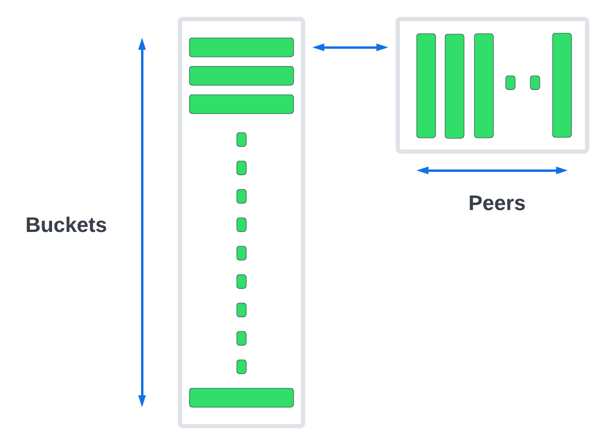

P2P
@liskhq/lisk-p2p is a package for creating unstructured P2P networks. The package in abstraction enables peer discovery, network security, and reliability. A developer can leverage all the underlying specifications proposed in LIP: 0004: Introduce robust peer selection and banning mechanism and use the package for building P2P use cases.
Usage
To run a P2P node.
const { P2P } = require('@liskhq/lisk-p2p');
const p2p = new P2P({
nodeInfo: {
wsPort: 5001,
networkId: '123xyz',
protocolVersion: '1.1',
},
});
const run = async () => {
await p2p.start();
};
run()
.then(() => console.log('P2P node has started!'))
.catch(err => {
console.log(`Error occurred while running p2p node: ${err}`);
p2p.stop();
process.exit(1);
});It will start a node that is available on 5001 websocket port.
P2P node has started!Architecture
The architecture of the Lisk P2P library is divided into multiple parts (components or classes). The main parts of the P2P library are as follows:
-
P2P
-
PeerPool
-
PeerServer
-
PeerBook
-
Peer
The responsibilities and interactions of these parts (components or classes) are summarized by the following diagram:

Before explaining the individual modules, it is helpful to become familiar with the following terminology:
- nodeInfo
-
Contains the required data for establishing a successful connection, and is updated whenever a peer publishes new (nodeInfo) data.
- peerInfo
-
Includes shared information which is the nodeInfo of a peer, and also the internal data accumulated on each peer by a node, related to productivity, reputation, rate limit, etc.
P2P
The P2P class is the main entry point of the P2P library that manages PeerPool, PeerBook and PeerServer. Its responsibilities consist of the following:
-
Expose the following actions:
-
getConnectedPeers(): Returns a list of all connected peers.
-
getDisconnectedPeers(): Returns a list of all disconnected peers.
-
applyPenaltyOnPeer(): Applies a penalty score to a specific peer for given peerId.
-
applyNodeInfo(): Updates node information.
-
getNodeInfo(): Returns node information.
-
start(): Starts PeerServer, loads previous peers and triggers discovery through seed nodes if not enough triedPeers.
-
stop(): Stops PeerServer, removes all the listeners and calls stop on PeerPool that eventually disconnects all the inbound/outbound connections.
-
-
Expose actions and emit events bubbling up from Peer, PeerPool and PeerServer.
-
Setup all event listeners and corresponding event handlers.
-
Handle getPeers remote procedure calls from peers.
-
Manage CRUD operations on PeerBook that holds and manages all the peerInfos of all known peers.
-
Loads previous peers and does the discovery, in case, if it doesn’t have at least 100 triedPeers then it starts the discovery through seed peers provided in the config.
PeerPool
The PeerPool part manages all outbound/inbound connections, and maintains the number of required connections as per the configuration. Its responsibilities consist of the following:
-
Trigger discovery through seedPeers.
-
Create inbound and outbound peer objects.
-
Contain all listeners and their corresponding handlers for each event coming out of Peer objects.
-
Maintain the number of inbound, outbound and connections based on maxInboundConnections and maxOutboundConnections.
-
Use selection functions to select peers to send or request.
-
Provide security and priority for incoming connections based on net group, latency, response rate and connect time.
-
Manage different trusted peer lists (whitelisted, fixed, blacklisted, seed) and their properties.
-
Perform the periodic shuffling of outbound connections every 5 minutes.
PeerServer
The PeerServer part starts a server in order to listen for incoming connections. Its responsibilities are to perform the following:
-
Provide a middleware to tackle attacks like PING/PONG, invalid events, etc.
-
Immediately reject incoming connections that are blacklisted or banned.
-
Check for duplicate connections and prevent the node from connecting to itself.
-
Check for invalid payloads.
-
Perform the handshake check for an incoming connection and create a valid peerInfo object for a peer.
Peer
The Peer part is a class which is extended to have specific outbound and inbound classes for outgoing and incoming connections respectively. The outbound class is for outgoing connections which a node makes by creating a socket client, whereas the inbound class is for incoming connections. Please note that both inbound and outbound peers can be used for 2-way communication, however a node chooses only outbound connections to make a request, and prioritizes outbound peers for sending information. The responsibilities for both types of connections are to perform the following:
-
Create or assign a socket for communication on connection.
-
Fetch the peer list and status of a peer on connection with outbound peers.
-
Impose rate limits on messages and RPC requests, and apply a penalty for misbehavior.
-
Ping inbound peers between 20-30 seconds to check for latency, and also to prove that the connection is alive, otherwise the connection is dropped.
-
Emit all the peer related events including the ones coming from the network.
PeerBook
The PeerBook part is a directory of peers. It implements peer buckets for newPeers and triedPeers as described in LIP 0004. The newPeers and triedPeers are lists of peer buckets whereby each peer bucket consists of a list of 32 peers, and each peer bucket is chosen based on its IP prefix.
 newPeers contains peers that either had no connection attempts or failed attempts.
It consists of a list of 128 buckets with each bucket having 32 peers.
Hence, the maximum number of peers that can be stored is 4096.
triedPeers contains the peers which a node was able to successfully establish a connection to, before or currently having an active connection.
It has a list of 64 buckets with each bucket containing 32 peers.
Therefore, the maximum number of peers that can be stored is 2048.
Both peer lists store peerInfo of a peer and have an eviction mechanism based on the time it resides in a bucket, or is evicted randomly when the bucket is full. In addition, they are also responsible for handling the movement of peers from triedPeers to newPeers and vice versa.
The PeerBook also manages static lists that are configured as described below:
-
seedPeers: Peers that will be used to perform an initial discovery. -
whitelistedPeers: Peers that are always given a slot for incoming connections and where banning cannot be applied from outside the library. -
fixedPeers: Peers that a node establishes an outbound connection to, and never drops it. In the case whereby a disconnection does occur, it attempts to re-establish the connection after a certain period of time. -
blacklistedPeers: Peers that are blacklisted by IP and are not allowed to establish a connection.
Furthermore, the Peerbook maintains a list of banned peers and creates a timeout of 24 hours for each banned peer, after which it can be unbanned.
The PeerBook exposes actions to perform CRUD operations based on peerId whereby the caller is agnostic to newPeers, triedPeers and their bucketing system.
Actions
It provides a simple interface to send, request, broadcast information and many more functions to interact with the network.
-
p2p.start(): start a P2P node after creating an instance. -
p2p.stop(): stop a P2P node. -
p2p.config: get the config of the node. -
p2p.isActive: check the status if the node is up and running. -
p2p.nodeInfo: check the node status and information. -
applyNodeInfo(nodeInfo: P2PNodeInfo): broadcast updatednodeInfoto the network. -
p2p.getConnectedPeers(): get all the connected peers that are connected to your node in the network. -
p2p.getDisconnectedPeers(): get all the disconnected peers that are part of the network but not connected to your node. -
p2p.request(packet: P2PRequestPacket): request information from the network that will run the peer selection and finds an appropriate peer for you to request information. -
p2p.send(message: P2PMessagePacket): sends information to 16 connected peers chosen by the peer selection function. -
p2p.broadcast(message: P2PMessagePacket): broadcast information to all the connected peers. -
p2p.requestFromPeer(packet: P2PRequestPacket,peerId: string): request from a specific peers in the network. -
p2p.sendToPeer(message: P2PMessagePacket, peerId: string): sends information to a specific peer in the connected peers.
Events
Listen to various events on the network to observe the network activities more closely and take appropriate actions if needed.
// When a peer updates its information
p2p.on(EVENT_UPDATED_PEER_INFO, (peerInfo: P2PPeerInfo) => {
// Take any action based peer update event
});
// When a peer sends any information
p2p.on(EVENT_MESSAGE_RECEIVED, (message: P2PMessagePacket) => {
// Take any action based on message received
const { event, data, peerId } = message;
});
// When a peer requests any information
p2p.on(EVENT_REQUEST_RECEIVED, async (request: P2PRequest) => {
// Take any action based on request received and respond with `end(results)` with results or return an error by `error(new Error('Request was not processed successfully'))`
const { procedure, data, peerId, end, error } = request;
});Available events
-
EVENT_BAN_PEER -
EVENT_CLOSE_INBOUND -
EVENT_CLOSE_OUTBOUND -
EVENT_CONNECT_ABORT_OUTBOUND -
EVENT_CONNECT_OUTBOUND -
EVENT_DISCOVERED_PEER -
EVENT_FAILED_PEER_INFO_UPDATE -
EVENT_FAILED_TO_ADD_INBOUND_PEER -
EVENT_FAILED_TO_COLLECT_PEER_DETAILS_ON_CONNECT -
EVENT_FAILED_TO_FETCH_PEER_INFO -
EVENT_FAILED_TO_FETCH_PEERS -
EVENT_FAILED_TO_PUSH_NODE_INFO -
EVENT_FAILED_TO_SEND_MESSAGE -
EVENT_INBOUND_SOCKET_ERROR -
EVENT_MESSAGE_RECEIVED -
EVENT_NETWORK_READY -
EVENT_NEW_INBOUND_PEER -
EVENT_OUTBOUND_SOCKET_ERROR -
EVENT_REMOVE_PEER -
EVENT_REQUEST_RECEIVED -
EVENT_UPDATED_PEER_INFO
Examples
Check the examples folder for a few examples to demonstrate P2P library usage with some use cases.
-
This particular example will run 3 nodes that will connect to each other and will then say “hi” to each other, they will then receive a response back from their peers when they receive it.
-
The find city game example will run 3 nodes that will change their city randomly and also inform the other nodes in which city they are located, if they find out that they are in the same city then they stop changing their city. The app will stop when all 3 nodes are in the same city.
-
Finally, the connect to Lisk networks example shows how to create a lightweight P2P client that can connect to Lisk networks such as the testnet, mainnet and the devnet and listen to various events and request data on connection events.